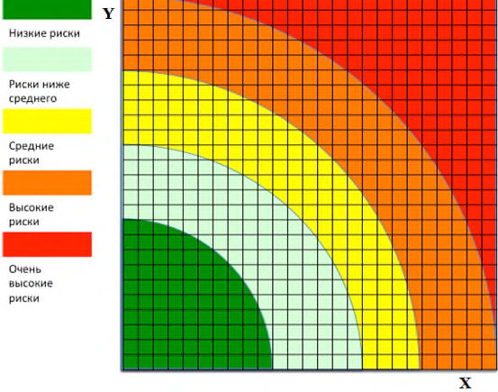

СП 366.1325800.2017 «Промысловые трубопроводы. Оценка технических решений на осн»
О документе: разработчики, утверждение, регистрация, ключевые слова
СВОД ПРАВИЛ
СП 366.1325800.2017
Издание официальное
Москва 2017
1 ИСПОЛНИТЕЛЬ - ООО «Трансэнергострой»
2 ВНЕСЕН Техническим комитетом по стандартизации ТК 465 «Строительство»
3 ПОДГОТОВЛЕН к утверждению Департаментом градостроительной деятельности и архитектуры Министерства строительства и жилищно-коммунального хозяйства Российской Федерации (Минстрой России)
4 УТВЕРЖДЕН приказом Министерства строительства и жилищно-коммунального хозяйства Российской Федерации от 18 декабря 2017 г. № 1683/пр и введен в действие с 19 июня 2018 г.
5 ЗАРЕГИСТРИРОВАН Федеральным агентством по техническому регулированию и метрологии (Росстандарт)
6 ВВЕДЕН ВПЕРВЫЕ
В случае пересмотра (замены) или отмены настоящего свода правил соответствующее уведомление будет опубликовано в установленном порядке. Соответствующая информация, уведомление и тексты размещаются также в информационной системе общего пользования - на официальном сайте разработчика (Минстрой России) в сети Интернет
© Минстрой России, 2017
Настоящий нормативный документ не может быть полностью или частично воспроизведен, тиражирован и распространен в качестве официального издания на территории Российской Федерации без разрешения Минстроя России
- 1 Область применения
- 2 Нормативные ссылки
- 3 Термины и определения
- 4 Основные положения
- 5 Классификация эксплуатационных рисков промысловых трубопроводов
- 5.1 Основное риск-образующее событие, определение риска для промысловых трубопроводов
- 5.2 Риск-факторы, основные негативные воздействия и угрозы для промысловых трубопроводов
- 5.3 Классификация негативных последствий от риск-образующих событий
- 5.4 Оценка эксплуатационных рисков промысловых трубопроводов
- 5.5 Оценка вероятности эксплуатационных рисков промысловых трубопроводов
- 5.6 Оценка последствий эксплуатационных рисков промысловых трубопроводов
- 5.7 Классификация эксплуатационных рисков промысловых трубопроводов
- 6 Правила управления эксплуатационными рисками промысловых трубопроводов
- 6.1 Управление рисками при оценке технических решений
- 6.2 Управление рисками в процессе эксплуатации промысловых трубопроводов
- 7 Идентификация, оценка и приоритизация эксплуатационных рисков промысловых трубопроводов
- 7.1 Идентификация
- 7.2 Оценка и приоритизация
- 8 Правила риск-ориентированного выбора технических решений
- 9 Процесс риск-ориентированного выбора технических решений Библиография
СП 366.1325800.2017
Дата введения 2018-06-19
УДК
ОКС 91.010, 75.200
Ключевые слова: анализ риска, проектирование, промысловые трубопроводы, оценка и приоритизация эксплуатационных рисков промысловых трубопроводов
Руководитель организации-разработчика ЗАО «ПРОМТРАНСНИИПРОЕКТ»
Директор
В.А. Сидяков
| Руководитель разработки | Зам. директора по науке | Л.А. Андреева |
|---|---|---|
| Исполнитель | Начальник отдела Комплексных исследований, стандартизации и логистического сопровождения проектов | И.П. Потапов |
СОИСПОЛНИТЕЛИ:
Руководитель организации-разработчика ООО «Трансэнергострой»
| Генеральный директор должность | _________________ личная подпись | И.В. Вьюницкий | |
|---|---|---|---|
| Руководитель разработки | Генеральный директор должность | __________________ личная подпись | И.В. Вьюницкий |
| Исполнитель | Начальник отдела экспертизы промышленной безопасности объектов ТЭК должность | __________________ личная подпись | А.В. Фомин |
| Исполнитель | Руководитель группы стандартизации отдела ЭПБ объектов ТЭК должность | __________________ личная подпись | С.А. Артемьева |
Введение
Свод правил разработан в соответствии с Федеральным законом от 29 декабря 2004 г. № 190-ФЗ «Градостроительный кодекс Российской Федерации», Федеральным законом от 30 декабря 2009 г. № 384-ФЗ «Технический регламент о безопасности зданий и сооружений», Федеральным законом от 23 ноября 2009 г. № 261-ФЗ «Об энергосбережении и повышении энергетической эффективности и о внесении изменений в отдельные законодательные акты Российской Федерации».
Настоящий свод правил разработан авторским коллективом ООО «Трансэнергострой» (канд. хим. наук И.В. Вьюницкий , канд. техн. наук И.С. Сивоконь, С.А. Артемьева , Д.З. Стерелюхина, А.В. Фомин ) .
FIELD PIPELINES GRADE OF DESIGN BASED ON THE RISK ANALYSIS
1Область применения
Настоящий свод правил распространяется на стальные промысловые трубопроводы, расположенные на территории месторождений нефти и предназначенные для транспортирования продукции добывающих и нагнетательных скважин, участвующих в технологическом процессе добычи нефти и сопутствующего нефтяного газа.
Свод правил не распространяется на проектирование:
- промысловых трубопроводов выполненных из неметаллических материалов;
- технологических трубопроводов, расположенных на территории месторождений нефти;
- трубопроводов систем промышленного и питьевого водоснабжения, канализации и утилизации промышленных отходов, расположенных на территории месторождений нефти;
- промысловых трубопроводов газовых и газоконденсатных месторождений.
2Нормативные ссылки
В настоящем своде правил использованы нормативные ссылки на следующие документы:
ГОСТ 27.002-2015 Надежность в технике. Термины и определения
СП 366.1325800.2017
ГОСТ 25866-83 Эксплуатация техники. Термины и определения
ГОСТ 27751-2014 Надежность строительных конструкций и оснований. Основные положения
ГОСТ Р 51901.11-2005 Менеджмент риска. Исследование опасности и работоспособности. Прикладное руководство
ГОСТ Р 55990-2014 Месторождения нефтяные и газонефтяные. Промысловые трубопроводы. Нормы проектирования
СП 284.1325800.2016 Трубопроводы промысловые для нефти и газа. Правила проектирования и производства работ
Примечание - При пользовании настоящим сводом правил целесообразно проверить действие ссылочных стандартов и сводов правил в информационной системе общего пользования - на официальном сайте федерального органа исполнительной власти в сфере стандартизации в сети Интернет или по ежегодному указателю «Национальные стандарты», который опубликован по состоянию на 1 января текущего года, и по выпускам ежемесячного информационного указателя, «Национальные стандарты» за текущий год. Если заменен ссылочный документ, на который дана недатированная ссылка, то рекомендуется использовать действующую версию этого документа с учетом всех внесенных в данную версию изменений. Если заменен ссылочный документ, на который дана датированная ссылка, то рекомендуется использовать версию этого документа с указанным выше годом утверждения (принятия). Если после утверждения настоящего свода правил в ссылочный документ, на который дана датированная ссылка, внесено изменение, затрагивающее положение, на которое дана ссылка, то это положение рекомендуется применять без учета данного изменения. Если ссылочный документ отменен без замены, то положение, в котором дана ссылка на него, рекомендуется применять в части, не затрагивающей эту ссылку. Сведения о действии ссылочных документов целесообразно проверить в Федеральном информационном фонде стандартов.
3Термины и определения
В настоящем своде правил применены следующие термины с соответствующими определениями:
- 3.1надежность строительного объекта
- Способность строительного объекта выполнять требуемые функции в течении расчетного срока эксплуатацииИсточник: ГОСТ 27751-2014, статья 2.1.5
- 3.2основные технические решения; ОТР
- Документация, разрабатываемая для технологически сложных производственных объектов, содержащая основные схемы: технологические, электроснабжения, автоматизации и позволяющая определить основные параметры технологического и вспомогательного оборудования до начала процесса разработки проектной документации.
- 3.3отказ
- Событие, заключающееся в нарушении работоспособного состояния объекта.Источник: ГОСТ 27.002-2015, статья 3.4.1
- 3.4проектная документация; ПД
- Совокупность текстовых и графических документов, определяющих архитектурные, функциональнотехнологические, конструктивные и инженерно-технические и иные решения проектируемого здания (сооружения), состав которых необходим для оценки соответствия принятых решений заданию на проектирование, требованиям технических регламентов и документов в области стандартизации и достаточен для разработки рабочей документации для строительства.Источник: ГОСТ Р 21.001-2013, статья 3.1.5
- 3.5проектно-изыскательские работы; ПИР
- Проектноизыскательские работы, комплекс работ, проводимых с целью разработки документации для проведения строительства новых зданий и сооружений и реконструкции уже существующих объектов.
- 3.6предельное состояние
- Состояние объекта, при котором его дальнейшая эксплуатация недопустима или нецелесообразна, либо восстановление его работоспособного состояния невозможно или нецелесообразно.Источник: ГОСТ 27.002-2015, статья 3.2.7
- 3.7промысловый трубопровод
- Трубопровод с устройствами на нем для транспортирования газообразных и жидких продуктов под действием напора (разности давлений) от скважин до места выхода с промысла подготовленной к дальнему транспортированию товарной продукции.Источник: СП 284.1325800.2016, п. 3.17
- 3.8ремонт и ТО по «техническому состоянию»
- Ремонт и техническое обслуживание, при которых контроль технического состояния выполняется с периодичностью и в объёме, установленными в нормативной документации, а объем и момент начала ремонта определяется техническим состоянием ПТ.
- 3.9свищ
- Дефект в стенке трубы, фасонных изделий или в корпусе запорно-регулирующей арматуры.
- 3.10срок службы
- Продолжительность нормальной эксплуатации строительного объекта с предусмотренным техническим обслуживанием и ремонтными работами (включая капитальный ремонт) до состояния, при котором его дальнейшая эксплуатация недопустима или нецелесообразна.Источник: ГОСТ 27751-2014, статья 2.1.5
- 3.11трещина
- Дефект в виде разрыва металла стенки трубы (трещина основного металла), все трещины любого характера и направлений в независимости от выявленных размеров классифицируются как недопустимые дефекты
- 3.12техническое обслуживание, ТО
- Комплекс операций по поддержанию работоспособности ПТ.
- 3.13целостность
- Внутреннее единство объекта, его относительная автономность, независимость от окружающей среды.
- 3.14эксплуатация
- Стадия жизненного цикла изделия, на которой реализуется, поддерживается и восстанавливается его качество.Источник: ГОСТ 25866-83, статья 1
- 3.15эксплуатация ПТ до «отказа»
- Эксплуатация ПТ, до выхода его из строя, с «низким» риском, при котором проводят замену отказавшего оборудования, восстановление герметичности, пропускной способности и иные мероприятия для восстановления работоспособности в пределах текущих производственных потребностей.
- 3.16HAZID
- Инструмент распознавать всех существенных опасностей, который используется на ранних стадиях проекта, с учетом всех возможных потенциальных источников внешнего воздействия на объект.
- 3.17HAZOP
- Процесс детализации и идентификации проблем опасности и работоспособности системы, предназначенный для идентификации потенциальных отклонений от целей проекта, экспертизы их возможных причин и оценки их последствий.Источник: ГОСТ Р 51901.11-2005, раздел 4
4Основные положения
Требования к разработке проектной документации на промысловые трубопроводы приведены в СП 284.1325800 и [1]. Настоящий свод правил применяется на этапе разработки основных технических решений при соответствующем требовании заказчика проектной документации (ПД).
СП 366.1325800.2017
Настоящий свод правил устанавливает требования к идентификации, оценке и приоритизации эксплуатационных рисков промысловых трубопроводов и принятию мер по их управлению в соответствии с которыми должны проводиться HAZOP и/или HAZID проектируемых объектов.
5Классификация эксплуатационных рисков промысловых трубопроводов
5.1Основное риск-образующее событие, определение риска для промысловых трубопроводов
- эксплуатацией ПТ, не соответствующих проектным решениям;
- негативными воздействиями третьих лиц или ошибками обслуживающего персонала;
- отказом систем, единиц оборудования, в т.ч. резервных из-за которых в будущем может произойти полная остановка ПТ;
- утечками, разгерметизацией элементов ПТ;
- отказом вспомогательных систем, обеспечивающих обнаружение неисправностей, отказов и снижения последствий отказов, в т.ч. системы КИПиА, пожаротушения и сигнализации;
- браком при выполнении строительно-монтажных работ;
- прочее.
где R - риск;
P - вероятность риск-образующего события;
СП 366.1325800.2017
L - ущерб или убыток в связи с этим риск-образующим событием в стоимостном выражении.
В настоящем своде правил вероятность и последствия негативного события оцениваются не расчетным методом, а экспертной оценкой в баллах. В настоящем своде правил риск представляет из себя двухмерный вектор, одна из координат которого представляет оценку вероятности, а другая - оценку последствий негативного события.
5.2Риск-факторы, основные негативные воздействия и угрозы для промысловых трубопроводов
СП 366.1325800.2017
- общие эксплуатационные опасности (угрозы) - условия работы, отказы технологического оборудования, ошибочные действия или бездействие персонала;
- опасности (угрозы), связанные с внешними воздействиями опасности, связанные с деятельностью соседних производств или объектов (техногенные опасности), с движением транспорта, природные опасности, акты саботажа и диверсии.
- через свищи (площадь дефектного отверстия - не более 10 -4 м² );
- через трещины в трубопроводе длиной не более 30 % условного диаметра трубопровода;
- через трещины в трубопроводе длиной не более 75 % условного диаметра трубопровода.
Нарушения целостности ПТ могут быть на запорной и регулирующей арматуре, системах контрольно-измерительных приборов и аппаратуры (КИПиА), инженерном обустройстве трасс и т.п. Описание наиболее распространённых и вероятных риск-факторов (угроз), способных привести к отказу ПТ приведены в таблице 1.
Под инженерным обустройством трасс понимается комплекс средств, обеспечивающих безопасную эксплуатацию промыслового трубопровода.
Таблица 1 - Наиболее распространённые и вероятные риск-факторы (угрозы), потенциально способные привести к отказу ПТ
| Наименование риск- фактора | Описание | Пример отказа | Наиболее вероятный дефект |
|---|---|---|---|
| 1 Внутренняя эрозия | Механический износ под воздействием взвешенных частиц в жидкости или газе или высокоскоростного потока жидкости | Разгерметизация в результате образования сквозных отверстий в стенке трубопровода или его элементов | Свищ |
| 2 Внутренняя общая коррозия | Растворение металла на участках большой площади под воздействием транспортируемых сред | Разгерметизация в результате образования сквозных отверстий или трещин в местах коррозионного утонения | Трещина 0,3 D |
| 3 Внутренняя локальная коррозия различных видов | Растворение металла на участках малой площади под воздействием транспортируемых сред | Разгерметизация в результате образования сквозных отверстий в местах коррозионного утонения: язвенная, канавочная, ножевидная, под осадками, щелевая коррозия и д.р. | Свищ |
| Наименование риск- фактора | Описание | Пример отказа | Наиболее вероятный дефект |
|---|---|---|---|
| 4 Наличие сероводорода, растрескивание, блистеринг | Развитие сульфидного коррозионного растрескивания под напряжением или водородного растрескивания | Образование трещин коррозионного растрескивания. Образование расслоений и отдулин (блистеринг) | Трещина 0,3 D |
| 5 Отсутствие/дефекты внешнего покрытия и/или отсутствие/неэффекти вная работа систем электрохимической защиты | Вероятность развития внешней коррозии под воздействием грунтовых сред | Разгерметизация в результате образования сквозных отверстий в местах коррозионного утонения | Свищ |
| 6 Блуждающие токи | Электролитическое растворение металла трубопровода в местах выхода внешних электрических токов из трубопровода в грунт | Разгерметизация в результате образования сквозных отверстий | Свищ |
| Наименование риск- фактора | Описание | Пример отказа | Наиболее вероятный дефект |
|---|---|---|---|
| 7 Наружная почвенная коррозия | Электрохимическое растворение металла трубопровода под воздействием грунтовых сред | Разгерметизация в результате образования сквозных отверстий или трещин в местах коррозионного утонения | Свищ |
| 8 Внешняя коррозия в водной среде | Коррозия или эрозия металла трубопровода под воздействием сред поверхностных водоемов | Разгерметизация в результате образования сквозных отверстий или трещин в местах коррозионного утонения | Свищ |
| 9 Наружное коррозионное растрескивание | Коррозионное растрескивание трубопровода под воздействием почв с опасностью стресс-коррозии | Образование трещин коррозионного растрескивания | Трещина 0,3 D |
| 10 Атмосферная коррозия | Коррозия наземных участков трубопроводов под воздействием атмосферы | Разгерметизация в результате образования сквозных отверстий или трещин в местах коррозионного утонения | Свищ |
| Наименование риск- фактора | Описание | Пример отказа | Наиболее вероятный дефект |
|---|---|---|---|
| 11 Строительный и металлургический брак | Наличие металлургических и монтажных дефектов в металле трубопровода и его элементах, а также в сварных и других соединениях | Зарождение и развитие трещин при эксплуатации на имеющихся дефектах Щелевая коррозия в дефектах | Трещина 0,3 D |
| 12 Механические повреждения (риски, задиры, вмятины, гофры и т.п.) при строительстве или эксплуатации | Локальные нарушения формы и размеров трубопроводов и элементов трубопровода, вызывающие концентрацию напряжения или снижающие конструкционную прочность | Развитие трещин и/или локальной коррозии в местах концентрации напряжений | Трещина 0,75 D |
| Наименование риск- фактора | Описание | Пример отказа | Наиболее вероятный дефект |
|---|---|---|---|
| 13Внешнее воздействие третьих сил (уязвимые участки) | Повышение вероятности повреждений трубопроводов посторонними лицами из-за нарушения норм и правил при прокладке трубопровода или при осуществлении какой-либо деятельности в охранной зоне трубопровода | Механическое повреждение из-за нарушения глубины залегания трубопровода Обустройство несанкционированных переездов | Трещина 0,75 D |
| 14 Знакопеременные механические нагрузки | Вероятность появления трещин малоцикловой усталости в местах возникновения продольных и поперечных колебаний | Образование трещин малоцикловой усталости в сварных соединениях и/или по телу трубы | Трещина 0,3 D |
| 15 Естественные напряжения, движения грунта, паводок | Вероятность появления трещин и деформаций в подземных и подводных участках трубопровода в результате перемещения грунта или потока воды | Разрушение трубопровода в местах неконтролируемого смещения его оси | Трещина 0,3 D |
| Наименование риск- фактора | Описание | Пример отказа | Наиболее вероятный дефект |
|---|---|---|---|
| 16 Пересечения водных преград | Вероятность образования и развития дефектов на ответственных участках с пониженной контролепригодностью | Аварии с загрязнением бассейнов рек и водоемов | Трещина 0,3 D |
| 17 Потеря устойчивости (всплытие, выпучивание при прокладке в условиях вечной мерзлоты, просадка) | Отклонение оси трубопровода от заданного положения, установленного проектом, влекущее изменение напряженно- деформированного состояния и ускоренное разрушение | Разрушение трубопровода в местах неконтролируемого смещения его оси | Трещина 0,3 D |
| 18 Пересечение с коммуникациями (ЛЭП, трубопроводы, автодороги и т.п.) | Повышенная вероятность механических и коррозионных повреждений под воздействием близкорасположенных объектов или деятельности, с ними связанной | Коррозионные повреждения в результате взаимодействия с соседним (пересекаемым) объектом Механические повреждения трубопровода при производстве работ в совместной охранной зоне (пересечении зон) | Трещина 0,3 D |
| Наименование риск- фактора | Описание | Пример отказа | Наиболее вероятный дефект |
|---|---|---|---|
| 19 Врезки, ремонт, ликвидация порывов | Увеличение вероятности возникновения дефектов в результате проведения ремонтных работ и работ по реконструкции | Образование сквозных коррозионных дефектов в местах ремонтной сварки | Трещина 0,3 D |
| 20 Нарушение технологического режима работы трубопровода | Неоправданное повышение давления (гидроудар), изменение термобарических параметров эксплуатации | Разрыв трубопровода, прежде всего в местах пониженной прочности | Трещина более 0,75 D |
| 21Природные воздействия | Резкое повышение внешней механической нагрузки на трубопровод | Разрыв трубопровода, прежде всего в местах пониженной прочности | Трещина более 0,75 D |
| 22Предумышленные противоправные воздействия третьих лиц, в т.ч. диверсия, теракт | Взрывное, термическое и механическое воздействие на трубопровод | Разрыв трубопровода | Трещина более 0,75 D |
5.3Классификация негативных последствий от риск-образующих событий
- обнаружение и контроль работоспособности ПТ;
- минимизация утечки транспортируемых сред, предотвращение распространения утечки, ликвидация возгорания и т.п.;
- ликвидация последствий -сбор разлившегося продукта, рекультивация, восстановление, устранение ущерба.
Возможные сценарии отказа на ПТ приведены в таблице 2.
Таблица 2 - Возможные сценарии отказа на ПТ
| Обозначение типового сценария | Схема развития сценария |
|---|---|
| С1 - выброс легковоспламеняющейся жидкости без возгорания | Разрушение трубопровода →выброс жидкой фазы и газа (при наличии) →растекание опасного вещества по территории и дегазация жидкой фазы (при наличии растворенного газа) с частичным испарением пролива →безопасное рассеивание газа и паров жидкой фазы →загрязнение окружающей среды |
| С2 - пожар пролива легковоспламеняющейся жидкости | Разрушение трубопровода → выброс в окружающую среду жидкой фазы и газа →растекание жидкой фазы →возможное частичное испарение горючей жидкости →воспламенение пролитой жидкой фазы при наличии источника зажигания →пожар пролива →попадание в зону возможных поражающих факторов людей и/или оборудования →последующее развитие аварии в случае, если затронутое оборудование содержит опасные вещества→ загрязнение окружающей среды |
| Обозначение типового сценария | Схема развития сценария |
|---|---|
| С3 - сгорание топливно- воздушной смеси на открытом воздухе | А - разгерметизация газопровода (трубопровода нефтяной эмульсии с высоким содержанием газа) → выброс газа в открытое пространство → образование взрывоопасной газовоздушной смеси → взрыв (дефлаграционное сгорание) при наличии источника инициирования → поражение оборудования и персонала ударной волной, термическое поражение |
| С3 - сгорание топливно- воздушной смеси на открытом воздухе | Б - полная или частичная разгерметизация трубопровода с нефтью (нефтяной эмульсией) → поступление в окружающую среду газа и паров в газообразном состоянии, разлив и дегазация нефтяной эмульсии → образование взрывоопасной топливно- воздушной смеси → возникновение источника зажигания → зажигание облака → взрыв топливно- воздушной смеси с образованием ударной воздушной волны → попадание в зону возможных поражающих факторов, людей и/или оборудования → возможная эскалация аварии →последующее развитие аварии по сценарию С1 |
| С3 - сгорание топливно- воздушной смеси на открытом воздухе | В - разрушение трубопровода с нефтью (нефтяной эмульсией)→выброс опасного вещества в окружающую среду →образование пролива нефти (нефтяной эмульсии), образование и распространение облака топливовоздушной смеси →возникновение в зоне облака топливовоздушной смеси источника зажигания →пожар-вспышка→ воздействие поражающих факторов на людей, оборудование, окружающую среду →загрязнение окружающей среды |
| Обозначение типового сценария | Схема развития сценария |
|---|---|
| С4 - выброс газа без возгорания | Разрушение газопровода → выброс газа → формирование и распространение взрывоопасного облака → безопасное рассеивание газа без возгорания → загрязнение окружающей среды → возможное последующее развитие аварии и сгорание газовоздушной смеси в случае неблагоприятного развития аварийной ситуации и скопления газовоздушной смеси в помещениях и т.п. |
| С5 - факельное горение газа | Разрушение газопровода → истечение газа под давлением с мгновенным воспламенением → факельное горение истекающей струи → воздействие пламени на оборудование, поражение людей → последующее развитие аварии в случае, если затронутое оборудование содержит опасные вещества |
- загрязнение окружающей среды (экологический ущерб);
- травмирование людей (социальный ущерб);
- повреждение имущества (материальный ущерб).
5.4Оценка эксплуатационных рисков промысловых трубопроводов
Оценка эксплуатационных рисков ПТ определяет требования:
- к проектным решениям по обеспечению безотказной работы ПТ в рамках процесса оценки технических решений и процедур HAZOP/HAZID;
- к перечню и содержанию методов и мероприятий по техническому диагностированию, контрольным мероприятиям, мероприятиям по защите от коррозии и обеспечению пропускной способности ПТ, различным видам ремонта и капитального ремонта, которые должны быть предусмотрены в проектных решениях на ПТ.
5.5Оценка вероятности эксплуатационных рисков промысловых трубопроводов
СП 366.1325800.2017
1 - отнести вероятность наступления риск-образующего события к одной из пяти категорий таблицы 3 на основании описания в графе 2.
2 - экспертно оценить вероятность по пятибалльной шкале где именно находится оценка - ближе к нижней границе, к верхней или в середине и поставить соответствующее число баллов в интервале, заданном в таблице 3.
При оценке вероятности необходимо учитывать опыт эксплуатации объектов-аналогов, результаты доступных научных исследований и расчётов.
В случае отсутствия достаточной информации для оценки вероятности наступления риск-образующего события по 5.2 принимается среднее значение - 13 баллов.
Таблица 3 - Описание шкалы для оценки вероятности отказа ПТ
| Категория риска | Частота риск-образующего события * | Оценка, балл |
|---|---|---|
| Низкая | Для данного типа ПТ с применением предварительных проектных решений отказ невозможен или возможен не чаще чем один раз в 10 лет | 1 - 5 |
| Вероятно | Для данного типа ПТ с применением предварительных проектных решений вероятны 2 - 3 отказа на протяжении 10 лет эксплуатации | 6 - 10 |
| Средняя | Для данного типа ПТ с применением предварительных проектных решений может произойти до двух отказов на протяжении трех лет эксплуатации | 11 - 15 |
| Высокая | Для данного типа ПТ с применением предварительных проектных решений возможно более двух отказов на протяжении трех лет эксплуатации | 16 - 20 |
| Очень высокая | Для данного типа ПТ с применением предварительных проектных решений возможен отказ уже в течение первого года эксплуатации | 21 - 25 |
5.6Оценка последствий эксплуатационных рисков промысловых трубопроводов
1 - отнести последствия наступления риск-образующего события к одной из пяти категорий 1-й графы таблицы 4 на основании содержания граф 2 - 4;
2 - экспертно оценить последствия по пятибалльной шкале где именно находится оценка - ближе к нижней границе, к верхней или в середине и поставить соответствующее число баллов в заданном интервале, указанном в таблице 4.
При оценке последствий учитывать опыт эксплуатации объектов аналогов, результаты доступных научных исследований и расчётов.
1 - наиболее распространённый на практике и на аналогичных объектах сценарий развития отказа. Для такого сценария необходимо оценить и соответствующую ему вероятность согласно 5.5;
2 - наиболее тяжёлый/катастрофический сценарий, который может произойти на проектируемом ПТ. При этом необходимо оценивать проектируемый ПТ, а не опыт эксплуатации объектов-аналогов или другие случаи из практики. Для этого сценария необходимо оценить и соответствующую ему вероятность согласно 5.4.1.
СП 366.1325800.2017
Такие риски R должны соответствовать наиболее вероятному R 1 и наиболее тяжёлому/катастрофическому R 2 по последствиям сценариям.
В случае отсутствия достаточной информации для оценки последствий риск-образующего события согласно 5.3 принимается нижняя граница в категории «высокие» - 16 баллов.
Таблица 4
| Шкала последствий Социальный ущерб | Материальный ущерб* | Экологический ущерб** | Оценка, балл |
|---|---|---|---|
| Очень высокие Вред здоровью, повлекший постоянную потерю трудоспособности или гибель более двух лиц | Остановка эксплуатации не менее чем 1/3 добывающих скважин актива (месторождения нефти и газа) более чем на 24 ч 1 2 | Ущерб для окружающей среды с многолетними последствиями регионального масштаба. Выброс загрязняющих веществ на особо охраняемых территориях и в пределах населённых пунктов | 21 - 25 |
| Высокие Возможен смертельный случай и негативное воздействие на персонал и третьих лиц в т.ч. с постоянной потерей трудоспособности | Остановка эксплуатации не менее чем 1/3 добывающих скважин актива (месторождения нефти и газа) до 24 ч | регионального масштаба с возможностью устранения последствий в течение не более чем одного года. 2 Локальный выброс загрязняющих веществ на особо охраняемых территориях и в пределах населённых пунктов с возможностью устранения последствий несколько дней или недель | 16 - 20 |
| Шкала последствий | Социальный ущерб | Материальный ущерб* | Экологический ущерб** | Оценка, балл |
|---|---|---|---|---|
| Средние | Вероятны травмы и негативное воздействие на персонал и третьих лиц в т.ч. с временной потерей трудоспособности | Остановка эксплуатации до 1/3 добывающих скважин актива (месторождения нефти и газа) более чем на 24 ч | 1 Воздействие со значительным ущербом для нечувствительной окружающей среды, которая может быть восстановлена до эквивалентного состояния от 1 до 5 лет. 2 Воздействие с локальным ущербом для чувствительной окружающей среды, которая может быть восстановлена до эквивалентного состояния от 1 до 5-ти лет | 11 - 15 |
| Ниже среднего | Вероятны травмы и негативное воздействие на персонал и третьих лиц в т.ч. с необходимостью амбулаторного лечения и профилактики | Остановка эксплуатации до 1/3 добывающих скважин актива (месторождения нефти и газа) до 24 ч | 1 Воздействие со значительным ущербом для нечувствительной окружающей среды, которая может быть восстановлена до эквивалентного состояния не более чем за один год. 2 Воздействие с локальным ущербом для чувствительной окружающей среды, которая может быть восстановлена до эквивалентного состояния не более чем за один год | 6 - 10 |
| Шкала последствий | Социальный ущерб | Материальный ущерб* | Экологический ущерб** | Оценка, балл |
|---|---|---|---|---|
| Низкие | Отсутствует негативное воздействие на жизнь и здоровье персонала и третьих лиц | Производственные потери незначительные и не отражаются на выполнении плановых ежемесячных производственных показателей | Воздействие с локальным ущербом для окружающей среды, которая может быть восстановлена до эквивалентного состояния за период нескольких дней или недель | 0 - 5 |
5.7Классификация эксплуатационных рисков промысловых трубопроводов
Таблица 5
| Категория ПТ | Категория риска | Значение риска, балл* |
|---|---|---|
| 1 - Самый ответственный | 1 - Очень высокий | От 25 и более** |
| 2 - Ответственный | 2 - Высокий | От 20 до 25** |
| 3 - Опасный | 3 - Средний | От 15 до 20** |
| 4 - Не опасный | 4 - Ниже среднего | От 10 до 15** |
| 5 - Не ответственный | 5 - Низкий | От 1 до 10** |
Значение риска R рассчитывается по формуле
Риски для ПТ могут быть размещены на матрице рисков размерностью 25×25 ячеек. По шкале «Х» - вероятность, по шкале «Y» -последствия. Отнесение ПТ к категории на матрице рисков (рисунок 1) можно производить в соответствии с окраской. На матрице рисков (рисунок 1) окраска соответствует распределению риска по значению, указанному в таблице 5.
Рекомендуется, для уточнения распределения ПТ по категориям риска, оценить риски для нескольких существующих активов заказчика ПТ и по результатам внести корректировки в интервалы значений риска в таблице 5 на основании сравнения с принятой у заказчика ПД классификацией.
При наличии у заказчика ПД на ПТ внутренних нормативных документов, предусматривающую иную балльную систему оценки рисков она может применяться и при реализации требований настоящего свода правил. При этом важно обеспечить переход от внутренней системы оценки рисков к распределению ПТ на категории в соответствии с таблицей 5.
Рисунок 1 - Матрица рисков по категориям ПТ

СП 366.1325800.2017
6Правила управления эксплуатационными рисками промысловых трубопроводов
Результаты оценки рисков ПТ на стадии разработки ПД и при дальнейшей эксплуатации могут применяться:
- для определения периодичности и объёма ремонта, капитального ремонта, технического диагностирования и ревизии:
ПТ 1-й категории риска - меры по техническому диагностированию и ревизии в объёмах, обеспечивающих отсутствие отказов с реализацией принципа проведения планово-предупредительных мероприятий (диагностика, ТО, ремонт, капитальный ремонт, ревизия, замена) в объёмах, превышающих требования ПД, изготовителей оборудования и действующих нормативных документов;
ПТ 2-й категории риска -обеспечиваются мероприятиями в соответствии с требованиями технической документации на единицы оборудования и дополнительными работами в области технического диагностирования, постоянного визуального контроля технического состояния и приборного контроля технологических параметров;
ПТ 3-й категории риска - обслуживаются аналогично ПТ 2-й категории с оптимизацией периодичности объёмов работ на основании опыта эксплуатации;
ПТ 4-й и ниже категорий риска - могут эксплуатироваться по реализации мер по ремонту и ТО «по техническому состоянию»;
ПТ 5-й категории риска - эксплуатируются до отказа. По факту отказа проводятся работы по восстановлению работоспособности;
- для разработки ранжированного по рискам перечня мероприятий по поддержанию работоспособности и приведению в нормативное состояние ПТ в процессе эксплуатации;
- для расчёта инвестиций (физических объёмов работ) на восстановление работоспособности ПТ с целью вывода из состояния
СП 366.1325800.2017 бездействия, реконструкции действующих ПТ и обустройства новых месторождений нефти и газа;
- для формирования неснижаемого запаса запасных частей и материалов;
- для разработки проектной документации на ПТ;
- для выполнения иных видов работ на протяжении жизненного цикла ПТ.
Рекомендации по проектным решениям и эксплуатации ПТ выполненные на основе оценки рисков ПТ - дополнение к требованиям действующих нормативных документов.
6.1Управление рисками при оценке технических решений
- техническую возможность диагностирования дефектов или иных отклонений ПТ от проектных параметров, которые могут привести к реализации риск-образующего события;
- ремонтопригодность ПТ в случае отказа из-за реализации рискобразующего события; стратегия 3 «Сокращение» - обязывает разработчика проектной документации при разработке OTP предусматривать выбор оборудования,
СП 366.1325800.2017 материалов и изделий, решений по генеральному плану, способы прокладки трубопровода, системы КИПиА, системы защиты от различных воздействий и т.п., обеспечивающие выполнение требований заказчика проектной документации к проектируемому ПТ в части надёжности и срока службы, а также переводит рассматриваемый риск в более низкую категорию, для которой применима стратегия 2 «Мониторинг»; стратегия 4 «Устранение» - требует изменения OTP и разработки проектных решений и требований к эксплуатации ПТ, которые переводят ПТ на более низкую категорию риска, для которой применима стратегия 2 «Мониторинг». Изменённые OTP и требования по эксплуатации ПТ должны содержать проектные решения:
- предупреждающие возможность реализации риск-образующего события (материал, конструкция, технологический режим и требования к безопасной эксплуатации);
- предусматривающие своевременное обнаружение рискобразующего события (диагностика, мониторинг, системы КИПиА, контроль трассы и осмотр);
- по минимизации негативных последствий в случае реализации риск-образующего события (локализация утечки, пожаротушение и взрывобезопасность, ограничение доступа третьих лиц, аварийная остановка ПТ, план ликвидации аварий и оснащённость эксплуатирующей организации техническими средствами и обученным персоналом и т.п.);
- по эвакуации персонала и третьих лиц из района аварии (отказа), описание доступных на современном уровне методов ликвидации последствий утечки (очистка акваторий, рекультивация земель и т.п.).
У стратегии 4 возможен вариант усиления, когда не менее 1/2 принятых проектных решений по устранению риска должны быть дублированы.
Таблица 6
| Стратегия управления риском | Категория риска | Значение риска, баллы |
|---|---|---|
| 4 «Устранение» с дублированием не менее половины проектных решений по ликвидации риска | 1 - Очень высокий | От 25 и более |
| 4 «Устранение» | 2 - Высокий | От 20 до 25 |
| 3 «Сокращение» | 3 - Средний | От 15 до 20 |
| 2 «Мониторинг» | 4 - Ниже среднего | От 10 до 15 |
| 1 «Принять к сведению» | 5 - Низкий | От 0 до 10 |
Таблица 7
| Наименование риск- фактора | Проектные решения для минимизации риска, превышающие базовые требования нормативной документации |
|---|---|
| 1 Внутренняя эрозия | Увеличение толщины стенки; снижение потенциально опасных участков за счёт проектных решений |
| 2 Внутренняя общая коррозия | Увеличение толщины стенки; ингибиторная защита; внутренняя изоляция; системы внутреннего коррозионного мониторинга; уменьшение потенциально опасных участков за счёт проектных решений (технологическая защита от коррозии) |
| 3 Внутренняя локальная коррозия различных видов | Увеличение толщины стенки; ингибиторная защита; внутренняя изоляция; системы внутреннего коррозионного мониторинга; уменьшение потенциально опасных участков за счёт проектных решений (технологическая защита от коррозии) |
| 4 Наличие сероводорода, растрескивание, блистеринг | Увеличение толщины стенки; применение трубной продукции с более высокими механическими свойствами металла и сварного соединения; предварительная очистка перекачиваемого продукта; системы внутреннего коррозионного мониторинга |
| Наименование риск- фактора | Проектные решения для минимизации риска, превышающие (базовые) требования нормативной документации |
|---|---|
| 5 Отсутствие/дефекты внешнего покрытия и/или отсутствие/неэффективная работа систем электрохимической защиты | Увеличение толщины стенки; изоляционные работы на трубопроводе; применение системы электрохимической защиты |
| 6 Блуждающие токи | Применение системы электрохимической защиты |
| 7 Наружная почвенная коррозия | Увеличение толщины стенки; применение системы электрохимической защиты; изоляционное покрытие |
| 8 Внешняя коррозия в водной среде | Увеличение толщины стенки; применение системы электрохимической защиты |
| 9 Наружное коррозионное растрескивание | Увеличение толщины стенки; применение трубной продукции с более высокими механическими свойствами металла и сварного соединения; применение системы электрохимической защиты |
| 10 Атмосферная коррозия | Лакокрасочное покрытие |
| 11 Строительный и металлургический брак | Увеличение объёмов строительного контроля; увеличение давления гидроиспытания; увеличение толщины стенки; системы обнаружения утечек |
| 12 Механические повреждения (риски, задиры, вмятины, гофры и т.п.) при строительстве или эксплуатации | Увеличение толщины стенки; увеличение объёмов строительного контроля; увеличение давления гидроиспытания; системы обнаружения утечек; защитное композитное покрытие |
| Наименование риск- фактора | Проектные решения для минимизации риска, превышающие (базовые) требования нормативной документации |
|---|---|
| 13 Внешнее воздействие третьих сил (уязвимые участки) | Увеличение толщины стенки; увеличение глубины заложения трубопровода; инженерные системы защиты трубопровода от внешних воздействий (бетонные плиты, система труба в трубе, прокладка методом горизонтально-направленного бурения); системы обнаружения утечек; защита наружных элементов (ограждения, сигнализация); выделение и контроль охранной зоны; |
| 14 Знакопеременные механические нагрузки | Увеличение толщины стенки; защитное композитное покрытие |
| 15 Естественные напряжения, движения грунта, паводок | Увеличение толщины стенки; Компенсаторы |
| 16 Пересечения водных преград | Увеличение толщины стенки; конструкция «труба в трубе»; прокладка методом горизонтально-направленного бурения; системы обнаружения утечек; защитное композитное покрытие |
| 17 Потеря устойчивости (всплытие, выпучивание при прокладке в условиях вечной мерзлоты, просадка) | Увеличение объёмов строительного контроля; системы закрепления трубопровода в проектном положении; теплоизоляционные покрытия |
| 18 Пересечение и параллельное следование с коммуникациями (ЛЭП, трубопроводы и т.п.) | Увеличение глубины заложения; применение системы электрохимической защиты |
| Наименование риск- фактора | Проектные решения для минимизации риска, превышающие (базовые) требования нормативной документации |
|---|---|
| 19 Пересечение и параллельное следование с автомобильными и железными дорогами | Конструкция «труба в трубе»; увеличение толщины стенки; защита трубопровода бетонными плитами; применение системы электрохимической защиты трубопровода и защитного кожуха; системы контроля межтрубного пространства; системы обнаружения утечек; анализаторы атмосферного воздуха; дорожное барьерное ограждение; установка световозвращателей; установка предупреждающих знаков; системы аварийного ограничения движения на дороге; защитное композитное покрытие |
| 20 Врезки, ремонт, ликвидация порывов | Увеличение толщины стенки; увеличение глубины заложения; системы обнаружения утечек |
| 21 Нарушение технологического режима работы трубопровода | Увеличение толщины стенки системы защиты от превышения давления; автоматизированная система управления технологическим процессом |
| 22 Природные воздействия | Увеличение толщины стенки; системы обнаружения утечек; системы мониторинга природных воздействий |
| 23 Предумышленные противоправные воздействия третьих лиц, в т.ч. диверсия, теракт | Системы контроля и наблюдения |
6.2Управление рисками в процессе эксплуатации промысловых трубопроводов
7Идентификация, оценка и приоритизация эксплуатационных рисков промысловых трубопроводов
7.1Идентификация
- на первом этапе ПТ делится на отдельные участки, для которых технологические режимы эксплуатации, экологические условия на трассе, конструкция и вспомогательные системы не имеют существенных отличий. Например, если часть трассы ПТ проходит через водную преграду, в водоохранной зоне или иной особо охраняемой природной территории, а другая часть расположена на территории без каких либо ограничений в природопользовании, то такой ПТ должен быть разбит на два участка, трасса которых проходит по двум вышеописанным территориям. Также следует делить на участки ПТ в точках подключения других ПТ или при переходе от наземной прокладки на эстакаде к подземному исполнению;
- на втором этапе каждый участок ПТ анализируется на возможность реализации риск-образующих событий, перечисленных в 5.2. Кроме того, специалисты, которые проводят анализ, вправе сформулировать другие риск-образующие события, которые могут произойти на рассматриваемом ПТ в связи с его особенностями.
Таблица 8 - Перечень идентифицированных риск-образующих событий, которые могут произойти в процессе эксплуатации ПТ
| Риск- образующее | Вероятность события на участке | Вероятность события на участке | Вероятность события на участке | Вероятность события на участке | Вероятность события на участке |
|---|---|---|---|---|---|
| событие | ПТ - 1 | ПТ - 2 | ПТ - n | ||
| 1 | Да | Да | Да | ||
| 2 | Да | Нет | Нет | ||
| 3 | Нет | Да | Да | ||
| N | Да | Да | Нет |
7.2Оценка и приоритизация
Таблица 9 - Результаты оценки и приоритизации эксплуатационных рисков ПТ
| Участок ПТ - 1 | Участок ПТ - 1 | Участок ПТ - 1 | Участок ПТ - 1 | |
|---|---|---|---|---|
| Риск | Вероятность, балл | Последствия, балл | Значение риска | Принятая стратегия управления риском |
| Событие 1 ( R 1 ) | 6 | 10 | 11,7 | 2 «Мониторинг» |
| Событие 1 ( R 2 ) | 20 | 6 | 20,1 | 4 «Устранение» |
| Событие 3 ( R 1 ) | - | - | 1 «Принять к сведению» | |
| Событие 3 ( R 2 ) | - | - | 2 «Мониторинг» | |
| Событие n ( R 1 ) | 18 | 22 | 28,4 | 2 «Мониторинг» |
| Событие n ( R 2 ) | 18 | 22 | 28,4 | 4 «Устранение» с дублированием не менее½ проектных решению по ликвидации риска |
| Участок ПТ - n | Участок ПТ - n | Участок ПТ - n | Участок ПТ - n | |
|---|---|---|---|---|
| Риск | Вероятность, балл | Последствия, балл | Значение риска | Принятая стратегия управления риском |
| Событие 1 ( R 1 ) | 12 | 22 | 17,0 | 3 «Сокращение» |
| Событие 1 ( R 2 ) | - | - | 1 «Принять к сведению» | |
| Событие 2 ( R 1 ) | 3 | 6 | 6,7 | 1 «Принять к сведению» |
| Участок ПТ - n | Участок ПТ - n | Участок ПТ - n | Участок ПТ - n | |
|---|---|---|---|---|
| Риск | Вероятность, балл | Последствия, балл | Значение риска | Принятая стратегия управления риском |
| Событие 2 ( R 2 ) | 3 | 6 | 6,7 | 2 «Мониторинг» |
| Событие n ( R 1 ) | 4 | 24 | 24,3 | 4 «Устранение» |
| Событие n ( R 2 ) | 4 | 24 | 24,3 | 2 «Мониторинг» |
Обозначение - « n » - порядковый номер.
СП 366.1325800.2017
8Правила риск-ориентированного выбора технических решений
- допустимое число реализовавшихся риск-образующих событий (отказов) на протяжении всего срока службы ПТ;
- срок службы ПТ с учётом будущих экономически оправданных ремонтов и капитальных ремонтов ПТ;
- срок до первого ремонта ПТ, т.е. срок службы ПТ, когда безотказная эксплуатация обеспечивается только осмотрами, техническим обслуживанием, борьбой с коррозией и другими негативными воздействиями на ПТ;
- уровень приемлемости последствий реализации риск-образующих событий для окружающей среды, персонала, населения, охраны труда, имиджа компании, производственных потерь (см. таблицу 4).
Приведенные выше показатели определяют большинство проектных решений и требований по безопасной эксплуатации ПТ. Кроме того, показатели эксплуатационной надёжности должны соответствовать потребностям заказчика ПД и не превышать технически доступный уровень, соответствующий лучшим мировым практикам.
СП 366.1325800.2017 требований по безопасной эксплуатации в рамках операционной деятельности по защитным мероприятиям, ТО, ремонту и капитальному ремонту и с учётом ущерба от реализовавшихся рисков (отказов).
9Процесс риск-ориентированного выбора технических решений
- ПТ по формальным признакам имеет низкую категорию;
- действующие НД проектирования и эксплуатации ПТ не требуют дополнительных решений по повышению надёжности;
- из-за тех или иных особенностей ПТ (трасса, экологическая значимость района, потенциальный материальный или социальный ущерб) риски велики и не приемлемы для эксплуатирующей организации/заказчика.
9.3Этапы процесса выполнения ПИР с реализацией рискориентированного подхода
Процесс проектирования ПТ с применением риск-ориентированных подходов состоит из выполнения последовательных этапов и его результат -
ОТР и требования к эксплуатации ПТ, которые должны быть применены в процессе разработки ПД, проведения пуско-наладочных работ и последующей эксплуатации.
Этапы процесса применения риск-ориентированных правил проектирования ПТ, очерёдность их выполнения и исполнители приведены в таблице 10.
Таблица 10
| Этап | Содержание | Ответственный за выполнение |
|---|---|---|
| 1 Разработка задания на проектирование с указанием необходимости реализации риск- ориентированного подхода | Для проектируемого ПТ в задании на проектирование следует указывать: - допустимое число реализовавшихся риск-образующих событий (отказов) на протяжении всего срока службы ПТ; - срок службы ПТ с учётом будущих экономически оправданных ремонтов и капитальных ремонтов ПТ; - срок до первого ремонта ПТ; - уровень приемлемости последствий отказов ПТ (материальный, социальный и экологический ущерб) Результат этапа: Задание на проектирование | Заказчик ПД |
| 2 Разработка ОТР на ПТ | ОТР (типовые) в т.ч. по объектам-аналогам, соответствующие действующим НД. Результат этапа: Предварительные ОТР | Проектная организация |
| 3 Разбить проектируемый ПТ на отдельные участки | Для целей идентификации, оценки и приоритизации рисков ПТ разбивается на участки для каждого из которых эксплуатационные параметры и условия на трассе отличаются незначительно (см. 7.1). Результат этапа: Перечень участков ПТ с пикетами (начало, конец) | Проектная организация |
| Этап | Содержание | Ответственный за выполнение |
|---|---|---|
| 4 Для каждого участка проектируемого ПТ идентифицировать риск-факторы | Риск-факторы в таблице 1 и иные по рекомендациям 5.2 оцениваются по возможности реализации на проектируемом ПТ. Результат этапа: Заполненная для ПТ таблица 8 | Проектная организация* |
| 5 Оценка, приоритизация рисков ПТ и выбор стратегии управления рисками | Для идентифицированных на этапе 4 риск-факторов: - оценка вероятности в баллах от 1до 25 по таблице 3; - оценка вероятных последствий отказа в баллах от 1 до 25 из-за нарушения целостности ПТсучётом видов последствий и вероятных сценариев по 5.3 и таблице 2. Баллы оцениваются по таблице 4; - рассчитать риск по формуле (2) 5.7.2 и отнести ПТ к одной из категорий риска по таблице 5; - выбор стратегии управления риском по таблице 6 в соответствии с категорией риска. Результат этапа: Заполненная для ПТ таблица 9 | Проектная организация* |
| 6 Корректировка OTP ПТ с применением риск ориентированных подходов | В соответствии с выбранной стратегией управления риском нарушения целостности и последующего отказа ПТ для риск-фактора разработать и предусмотреть в ПД применение проектного решения и/или требования к эксплуатации. Примерный перечень проектных решений приведен в таблице 7. Результат этапа: ОТР ПТ с применением риск-ориентированных подходов | Проектная организация |
| Этап | Содержание | Ответственный за выполнение |
|---|---|---|
| 7 Контроль полноты и достаточности учёта рисков нарушения целостности в ОТР на ПТ | Выполнить процедуру оценки и приоритизации рисков с учётом новых ОТР, разработанных на этапе 6 Результат этапа: верифицированные ОТР ПТ с применением риск- ориентированных подходов | Проектная организация |
| 8 Согласование ОТР ПТ с заказчиком ПД | Согласовать с заказчиком ПД ОТП ПТ, разработанные с применением настоящего свода правил. Результат этапа: Согласованные с заказчиком ПД ОТР ПТ с применением риск-ориентированных подходов | Проектная организация, Заказчик ПД |
| * Для выполнения работы следует привлекать специалистов заказчика ПД/эксплуатирующей организации и согласовать полученные результаты. | * Для выполнения работы следует привлекать специалистов заказчика ПД/эксплуатирующей организации и согласовать полученные результаты. | * Для выполнения работы следует привлекать специалистов заказчика ПД/эксплуатирующей организации и согласовать полученные результаты. |
Библиография
- [1] СП 34-116-97 Инструкция по проектированию, строительству и реконструкции промысловых нефтегазопроводов